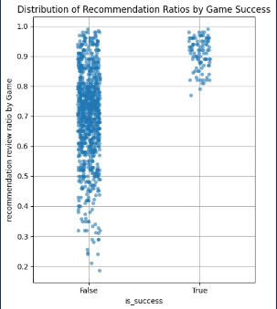
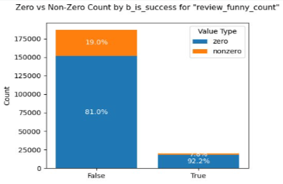
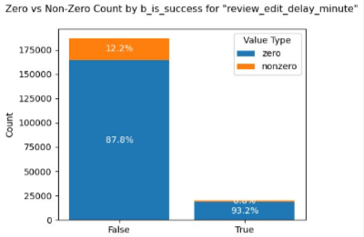

프로젝트 목표
- 게임 개발사 대상 리뷰 관리 및 운영 지원 B2B 대시보드 제공
- Steam 리뷰 데이터 분석을 통해 게임의 성공 요인 도출
프로젝트 배경
- Steam 리뷰는 게임 품질·만족도·문제점·인기 등을 실시간 반영
- 리뷰 점수와 개수는 상점 노출·추천 알고리즘·판매량과 직결
- 유저 리뷰 데이터 관리는 게임의 성공과 지속성에 중요한 역할
프로젝트 필요성
- 개발사와 유저 간 소통 채널 확보
- 리뷰 데이터 인사이트 도출로 성공 가능성 향상
- 리뷰 기반 게임 개선 및 업데이트 방향성 지원
- 리뷰 반응 추적을 통한 유저 니즈 파악
서비스 차별점
- 리뷰 수정율, 위험 리뷰, 유저 이탈 분석 등 성공/실패 패턴을 직관적으로 볼 수 있는 지표 설계
- 크롤링 + API 결합으로 대용량의 데이터를 통한 신뢰성 확보
- Power BI 대시보드로 시각적 직관성과 실시간 탐색성 강화
- 게임사·퍼블리셔가 전략적으로 활용할 수 있는 인사이트 제공
- 데이터 불균형을 보완하는 기간 슬라이서와 대시보드 상호작용 기능
- 마케팅 팀이 없는 소규모 개발사도 인사이트를 얻고 보완할 수 있음
팀원 구성 및 역할
김시온
- Azure Resource Manager
- 데이터 수집 및 크롤링 환경 구축
- Azure Databricks 파이프라인 설계
- 리뷰 데이터 크롤링 및 전처리
- ERD 구조 및 데이터베이스 관리
- Power BI 연동 및 대시보드 테스트
송누림
- Project Leader
- 분석 주제 및 시나리오 기획
- Feature 후보 도출 및 정리
- EDA 진행
- 분석 인사이트 도출 및 공유
- 대시보드 항목 구성 및 발표자료 정리
김태연
- Azure-Git, Resource Manager
- 리뷰 텍스트마이닝 및 모델링
- 감정 분석 모델 설계 및 테스트
- 리뷰데이터 Feature 도출 및 라벨링
- 데이터셋 GOLD 레이어 작성
- Power BI 시각화 준비
김지민
- Project Manager
- Steam API 크롤링 구조 설계 및 리팩토링
- 리뷰데이터 수집 및 전처리 코드 제작
- 데이터 병합 및 Naming Convention 정의
- 데이터 분석 파이프라인 관리
- 발표자료 제작 지원
이민지
- Git Resource Manager
- 유저 클러스터링 및 Feature 설계
- Feature 후보군 통계 검증
- 리뷰데이터 전처리 및 분석
- 분석 인사이트 정리 및 공유
- Power BI 시각화 기획
윤지찬
- Azure Resource Manager
- 리뷰데이터 크롤링 테스트
- API 수집 모듈 설계 및 코드 작성
- 데이터베이스 관리 및 ERD 작성 지원
- 데이터셋 전처리 지원
- 발표자료 내용 취합 및 최종 검수
데이터 수집

- Steam API & Selenium 활용
- RPG 인기 게임 200 + 최고 평점 200 → Top-tier 선정
- 랜덤 샘플 1,000개 → Other 게임
- 최종 1,037개 게임 리뷰 200건씩 수집
데이터 전처리

- 결측치 처리 (프로필 비공개, 플레이시간, 리뷰 작성 당시 플레이시간 결측)
- 비유효 데이터 삭제 (정식/얼리액세스 출시일 이전 리뷰 제거)
- 이상치 처리 (마지막 플레이 일자 1970년 1월 1일 → 삭제)
- 파생컬럼 생성
- 리뷰 텍스트 전처리: 영어/숫자 이외 → 제거, 이모지/URL/HTML/특수문자/구두점 제거, 유니코드 표준화, 공백 정리, 불용어 처리 등
데이터 분석

- 분석과 통계를 통한 전체 게임 중 상위 게임 선정: 상위게임 추천 리뷰 비율 ≥ 77%
- 날짜별 리뷰 개수 분포, 출시년도, 가격, 할인율
- 유저 리뷰 커뮤니케이션 활성도 분석 (답글, 반응, 좋아요/싫어요)
- 상위 게임과 일반 게임 비교: 리뷰 수정율, 리뷰 답변수, 2주간 플레이 시간 등 컬럼 비교
- 상위 게임 긍정적 컬럼 비율 ↑, 부정적 컬럼 비율 ↓
- 샘플 불균형 → 등분산성 위배, 정규성 가정 미충족 → 비모수 검정 수행
- 반복 검증: 다른 조건에서도 동일 경향 확인 (수치형, 범주형, 시계열)



- 리뷰 기반 클러스터링 → RPG 장르 KPI: 높은 내러티브 몰입도
- 허깅페이스 GTE Large 모델 적용 (데이터셋 링크)
- 샘플 부족 → 키워드 9개 → 7개, Macro F1 63% → 87%
대시보드
시작 페이지
게임별 리뷰 점수 분포 및 KPI 시각화

무료 대시보드
홈페이지

리뷰 수정율 페이지

리뷰 근황 페이지

유료 대시보드
유저 총합 페이지

리뷰 분류 페이지

위험 리뷰 페이지

유저 이탈 분석 페이지

키워드 분석 트리 페이지

문제 상황 발생 및 해결
1. 데이터 선정 문제
문제: E-commerce 데이터 부족 및 출처 불명 → 데이터셋 선정 어려움
해결: Steam 플랫폼 데이터 활용, 웹 크롤링 및 API로 리뷰 수집 → 사용자 피드백 기반 분석 가능
2. 작업 효율 및 역할 분배 문제
문제: 다양한 접근 시도로 진행 지연
해결: 수집팀/분석팀 역할 분리 → 데이터 확보와 방향성 도출에 집중
3. 데이터 수집 중 문제
문제: 요청 제한 발생, 이상치/공백/ASCII 그림 리뷰 등 예외 존재
해결: 요청량 및 슬립 시간 조절 → 게임 약 17,000개, 리뷰 약 22만 건 확보. 이상치/결측치 제거, 포맷 정리
4. 성공/비성공 게임 정의 문제
문제: 명확한 기준 선정 어려움 (Steam Awards, 논문, 성과 지표 등)
해결: 최고 수익 & 최고 평가 게임 선정, 비교 대상으로 무작위 게임 → 분석 통해 기준 신뢰성 확보
5. 모델링 성능 문제
문제: 로컬 하드웨어 제한 → F1 score 저하
해결: Colab Free로 일부 분류 성공, 전체 리뷰는 Databricks ML GPU 클러스터 활용 → 전체 데이터 분류 성공
6. 수집 데이터 불균형
문제: 게임당 리뷰 200개 고정 → 리뷰 기간 불균형
해결: 대시보드에 기간 슬라이서 적용, 추후 리뷰 데이터 확장 가능
기대 효과
- 게임 개발사: 리뷰 기반 KPI 파악 및 개선 전략 수립 가능
- 유저: 피드백 반영 게임 개선 → 만족도 상승
- 프로젝트 결과: 분석-모델-대시보드 일괄 제공 → B2B 서비스 구현